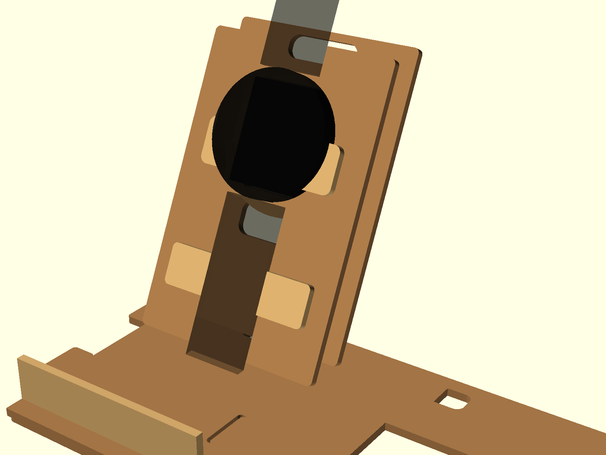
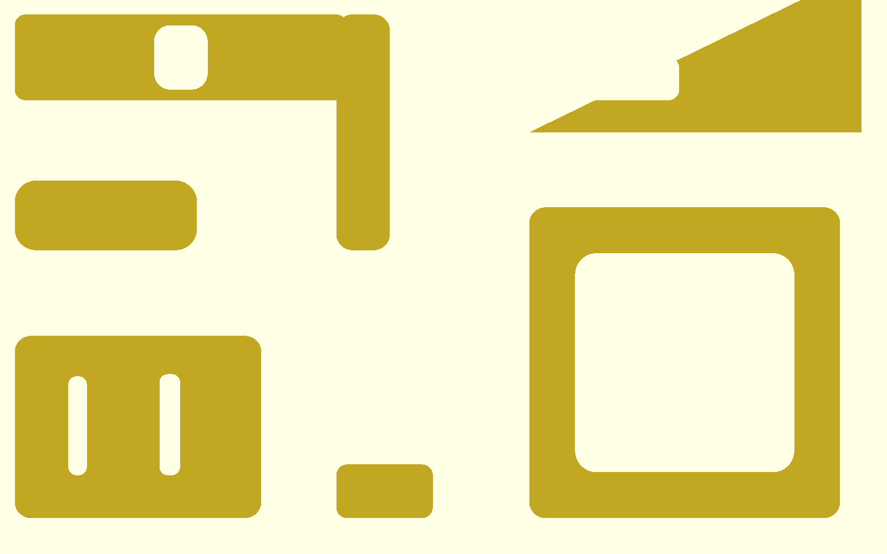
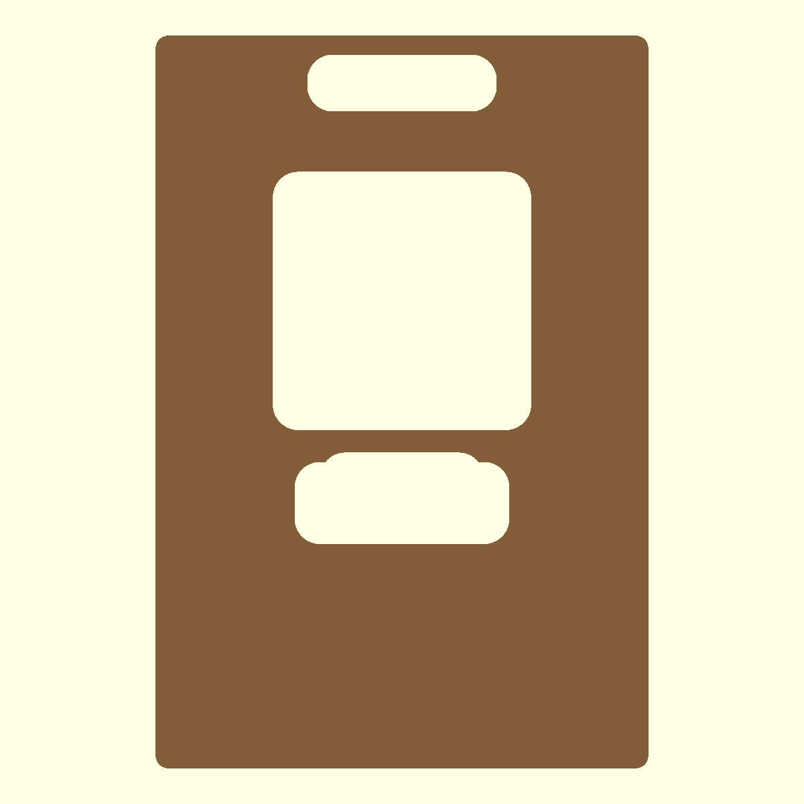
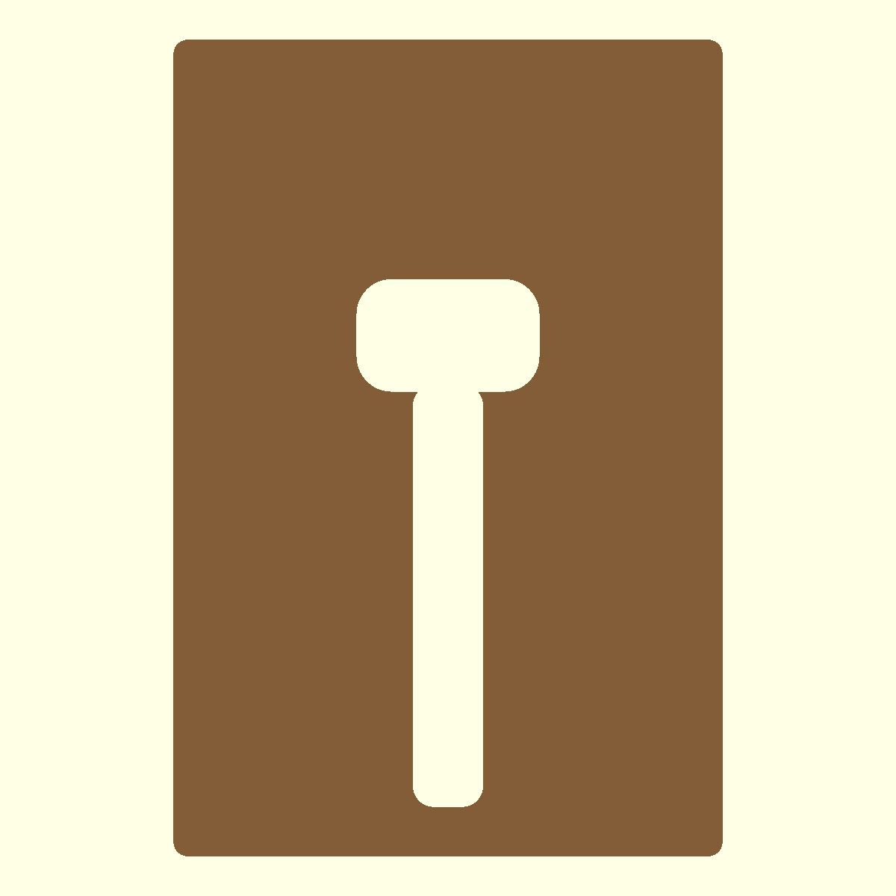
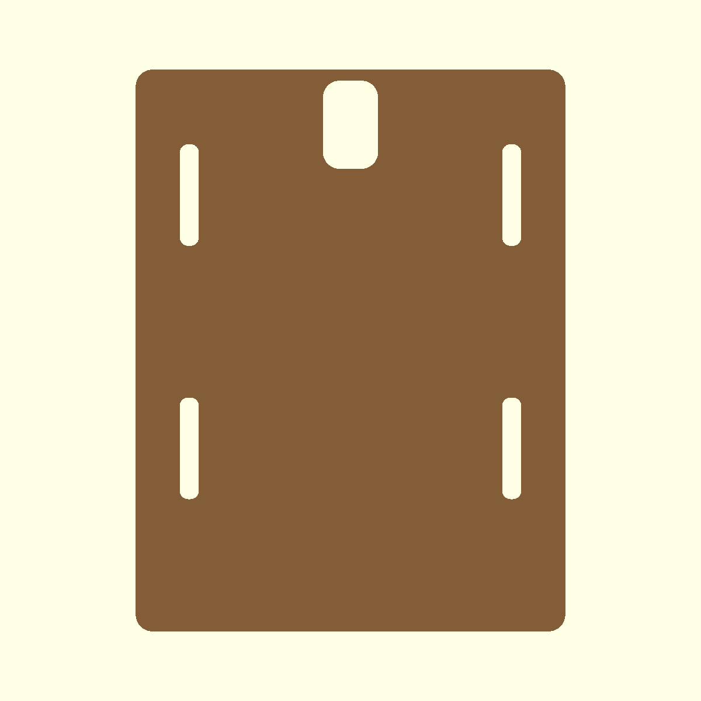
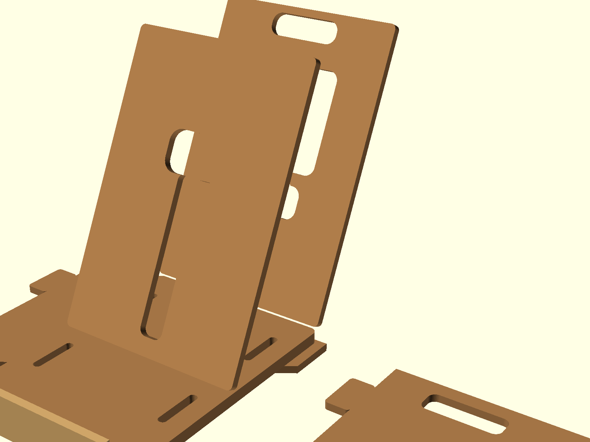
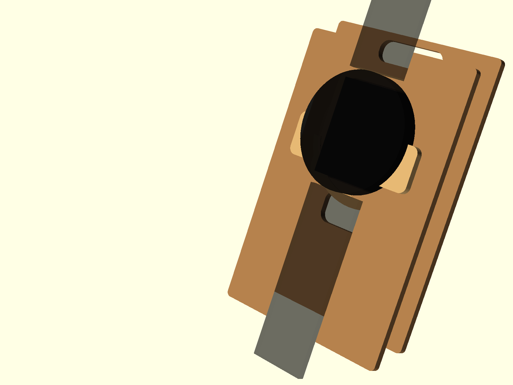

A4 손재단용 조립 설명서
Xiaomi Watch S4
하드보드 충전 도크
A4로 출력한 도면을 하드보드지에 올려 밑그림을 그리고 칼로 자르는 제작 방식입니다.
프린터 설정은 반드시 A4 / 실제 크기 100% / 페이지 맞춤 끄기입니다.
기준 재료: 1.5mm 하드보드지. 다른 두께를 쓰면 적층 수량과 홈 폭을 다시 확인해야 합니다.

0. 먼저 알아둘 것
작업 순서
- 테스트 쿠폰을 먼저 출력해서 잘라본다.
- 충전기, 케이블, 끼움 홈이 맞는지 확인한다.
- A4 템플릿을 100%로 출력한다.
- 하드보드지에 대고 밑그림을 옮긴다.
- 안쪽 구멍부터 자르고 바깥선을 자른다.
- 같은 부품끼리 먼저 겹쳐 붙인다.
- 충전기와 케이블을 넣어보고 최종 조립한다.
실수하기 쉬운 부분
- 프린터가 자동으로 축소하면 전체 치수가 틀어집니다.
- 측판은 왼쪽 2장, 오른쪽 2장입니다. 같은 방향만 4장 만들면 안 됩니다.
- 충전기 링은 4장입니다. 1장만 만들면 충전기가 고정되지 않습니다.
- 풀칠 전에 충전기와 케이블을 실제로 끼워봐야 합니다.
출력 후 모든 페이지 위쪽의 50mm 선을 자로 재세요. 진짜 50mm이면 그대로 써도 됩니다.
1. 부품표
| 번호 | 부품 | 수량 | 설명 |
|---|---|---|---|
| A | 전면판 | 2 | 충전기와 시계가 보이는 앞판입니다. 같은 모양 2장을 겹쳐 붙입니다. |
| B | 후면판 | 2 | 뒤쪽 케이블이 지나가는 판입니다. 같은 모양 2장을 겹쳐 붙입니다. |
| C-L | 왼쪽 측판 | 2 | 왼쪽 삼각 지지대입니다. |
| C-R | 오른쪽 측판 | 2 | 오른쪽 삼각 지지대입니다. |
| D | 바닥판 | 3 | 아래 받침입니다. 3장을 정확히 맞춰 붙입니다. |
| E | 앞 턱 | 2 | 앞쪽 낮은 턱입니다. 도크 앞쪽에 붙입니다. |
| F | 충전기 링 | 4 | 충전기 주변을 두껍게 잡아주는 링입니다. |
| G | 시계 받침 | 2 | 시계 아래쪽을 받치는 반원형 부품입니다. |
| H | 후면 고정판 | 2 | 뒤쪽에서 충전기 케이블 구멍을 잡습니다. |
| I | 하부 보강대 | 2 | 뒤쪽 아래를 보강하고 케이블 길을 잡습니다. |
| J | 각도 게이지 | 1 | 선택 부품입니다. 붙일 때 앞판 각도를 맞추는 도구입니다. |
| K | 풀 펴개 | 1 | 선택 부품입니다. 풀을 얇게 펴는 도구입니다. |
2. A4 템플릿 출력
이 순서로 출력
- a4_00_cut_list.svg - 수량표
- a4_01_test_coupon.svg - 테스트 쿠폰
- a4_02_front_rear.svg - 전면판/후면판
- a4_03_base.svg - 바닥판
- a4_04_side_panels.svg - 측판
- a4_05_small_parts.svg - 작은 부품
{kind=link}
{kind=link}
{kind=link}
{kind=link}
{kind=link}
{kind=link}
인쇄 체크
- A4 용지
- 실제 크기 100%
- 페이지 맞춤/자동 축소 끄기
- 50mm scale check 선 확인
3. 테스트 쿠폰

TEST
본 제작 전에 이것부터 자릅니다
충전기 구멍, 탭 구멍, 케이블 홈이 실제 재료에서 맞는지 확인하는 작은 시험 조각입니다.
- 충전기가 너무 빡빡하면 큰 부품을 자르기 전에 구멍을 조금 키워야 합니다.
- 탭이 안 들어가면 측판 조립이 어려워집니다.
- 케이블이 꺾이면 뒤쪽 케이블 홈을 넓혀야 합니다.
테스트 쿠폰을 생략하면 전체 부품을 다 자른 뒤 충전기가 안 들어갈 수 있습니다.
4. 자르는 방법
선을 옮기는 방법
- A4 출력물을 하드보드지 위에 올립니다.
- 네 모서리를 테이프로 고정합니다.
- 송곳, 바늘, 볼펜으로 모서리와 곡선 기준점을 찍습니다.
- 종이를 걷어내고 연필로 선을 이어 그립니다.
칼질 순서
- 작은 안쪽 구멍부터 자릅니다.
- 긴 직선은 자를 대고 여러 번 얕게 긋습니다.
- 둥근 모서리는 한 번에 돌리지 말고 짧게 나눠 자릅니다.
- 마지막에 바깥선을 자릅니다.
5. 같은 부품끼리 먼저 붙이기

A전면판 2장
구멍 위치를 정확히 맞춰 붙입니다.
구멍 위치를 정확히 맞춰 붙입니다.

B후면판 2장
케이블 긴 홈이 어긋나면 안 됩니다.
케이블 긴 홈이 어긋나면 안 됩니다.

D바닥판 3장
측판 끼우는 홈 4개를 맞춥니다.
측판 끼우는 홈 4개를 맞춥니다.
C측판 좌/우 각 2장
방향을 섞지 마세요.
방향을 섞지 마세요.
6. 본조립

01
바닥판과 측판을 먼저 맞춰봅니다
D 바닥판 3장을 붙인 뒤, C-LC-R 측판을 홈에 끼워봅니다.
아직 풀칠하지 말고, 좌우 측판이 바닥에 똑바로 서는지 확인합니다.
02
전면판 뒤에 작은 부품을 붙입니다
A 전면판 뒤쪽에 F 충전기 링 4장과 G 시계 받침 2장을 붙입니다.
- 충전기 링은 큰 사각 구멍 주변에 붙입니다.
- 시계 받침은 충전기 구멍 아래쪽 반원 받침입니다.
03
후면판 뒤에 케이블 고정부를 붙입니다
B 후면판에 H 후면 고정판 2장과 I 하부 보강대 2장을 붙입니다.
케이블이 지나가는 구멍과 긴 홈이 막히지 않게 맞춥니다.

04
충전기와 케이블을 먼저 끼워봅니다
전면판, 후면판, 충전기, 케이블을 임시로 맞춰봅니다.
- 충전기가 들어가되 너무 흔들리지 않아야 합니다.
- 케이블이 뒤쪽으로 자연스럽게 빠져야 합니다.
- 여기서 맞지 않으면 칼이나 사포로 조금씩 수정합니다.
05
최종으로 붙입니다
바닥판 위에 전면판과 후면판을 세우고, 좌우 측판을 붙입니다. 마지막으로 E 앞 턱 2장을 앞쪽에 붙입니다.
J 각도 게이지를 썼다면 앞판 각도를 맞춘 뒤 빼내도 됩니다.
7. 최종 체크리스트
□ 충전기가 억지로 들어가지 않는다.
□ 케이블이 뒤쪽 홈으로 빠진다.
□ 바닥이 흔들리지 않는다.
□ 측판 좌우 방향이 맞다.
□ 시계를 올렸을 때 충전 위치가 맞다.
□ 풀 마르기 전 충전기를 빼둘 수 있다.
완전히 마르기 전에는 실제 시계를 오래 올려두지 마세요. 풀 마르는 동안 각도가 틀어질 수 있습니다.